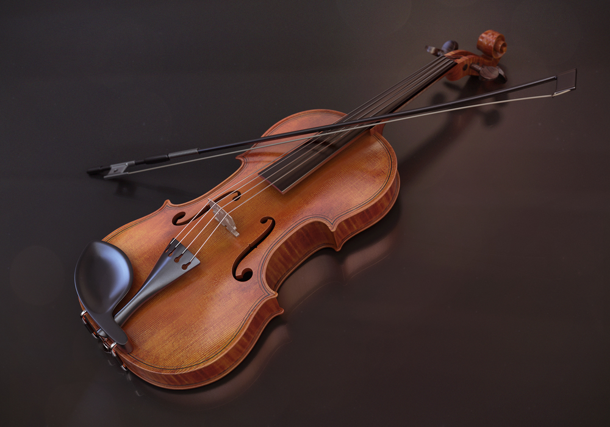

The classical guitar is distinguished by a number of characteristics:- It is an acoustic instrument. The sound of the plucked string is amplified by the soundboard and resonant cavity of the guitar. It has six strings, though some classical guitars have seven or more strings.

Compared to its ancestors, the violin is in a class by itself in terms of completeness. In addition, it was not improved gradually over time, but appeared in its current form suddenly around 1550. Yet, none of these early violins exist today. This history of the violin is inferred from paintings from this era that feature violins. The two earliest violin makers in recorded history are both from northern Italy:- Andre Amati from Cremona and Gasparo di Bertolotti from Salon (Gasparo di Salon).

The tanpura or tambura, tanpura is a long-necked plucked string instrument, originating from India, found in various forms in Indian music. It does not play melody but rather supports and sustains the melody of another instrument or singer by providing a continuous harmonic bourdon or drone. A tanpura is not played in rhythm with the soloist or percussionist: as the precise timing of plucking a cycle of four strings in a continuous loop is a determinant factor in the resultant sound, it is played unchangingly during the complete performance. The repeated cycle of plucking all strings creates the sonic canvas on which the melody of the raga is drawn. The combined sound of all strings - each string a fundamental tone with its own spectrum of overtones - supports and blends with the external tones sung or played by the soloist.